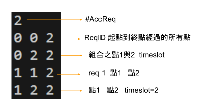
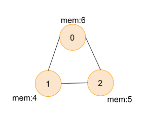
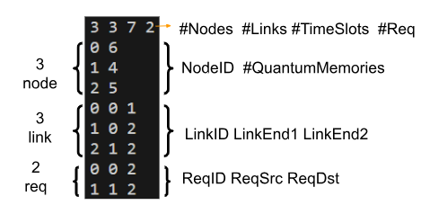
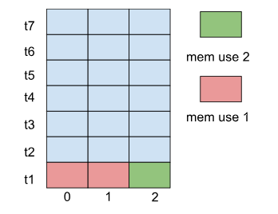
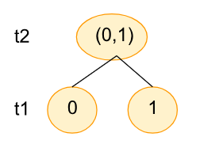
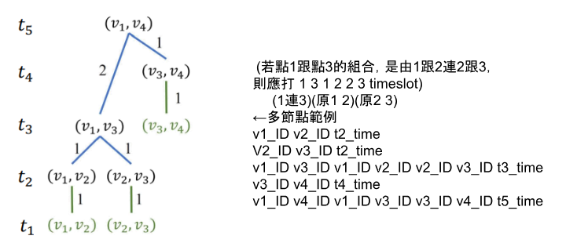

Quantum Network#
基本資訊
程式語言: C
程式網址: https://onlinegdb.com/rSHjpgVN83
製作時長: 2 周
作者: Hutaki Hare
題目簡介#
給定時間t與各個tasks要利用quantum network達成不同點的資料穿送，因為不同quantum
所擁有的memory大小不同，在memory大小不夠時，便須錯開時間做entanglement與swapping
，若無法在時間內完成該task，則可拒絕，並嘗試下一個task，在結果處印出接受的task數、
task編碼、完成task的過程。
運作方式#
1.開始: 輸入時間、task、quantum info#
int node_num,link_num,timeslot,request_num,time_count=0;
scanf("%d %d %d %d",&node_num,&link_num,×lot,&request_num); //info scanning
...
int path_determine[request_num][node_num]; //store each node's distance with the request's distance
for(int i=0;i<node_num;i++){ //scan node
scanf("%d %d",&node[i].node_id,&node[i].quantum_mem);
node[i].next_node=NULL;
}
//reset path_determine to all not been yet (-1)
link_graph link[link_num];
for(int j=0;j<link_num;j++){ //scan link & connect nodes
scanf("%d %d %d",&link[j].link_id,&link[j].link_end1,&link[j].link_end2);
// enternal links, not count as mem
}
 
2. 過程#
創造出兩個節點數*timeslot數的二為陣列紀錄各節點(quantum)的memory使用狀況
int numerlogy_1[timeslot+50][node_num+50],numerlogy_2[timeslot+50][node_num+50]; //numerlogy graph to see the mem use
...
用for迴圈一個一個看任務，由BFS找出起點到終點的最短路徑
//main
for(int i=1;path_determine[now][tmp_node]!=0;i++){ //find path of src and dst, store in tree
tree[now][i]=tmp_node;
connecting_node *tmp=node[tmp_node].next_node;
tmp=sort(tmp,node_num); //make tmp in small to big order
while(tmp){
if(path_determine[now][tmp->node_id]==(path_determine[now][tmp_node]-1)){
tmp_node=tmp->node_id;
if(path_determine[now][tmp->node_id]==0){
i++;
tree[now][0]=i; //strt from 1 to tree[fin_request][0] (<=)
tree[now][i]=tmp->node_id;
}
break;
}
tmp=tmp->next;
}
}
//function
int BFS(int i,int node_num,node_info* node,int request_src,int request_dst,int path_determine[][node_num]){ // find the distance between src and dst
int last_node=request_dst; //strt from dst
node_info *tmp_node=&node[request_dst]; //connect to the node of dst
connecting_node *stack=NULL,*rear=stack,*tmp_stack=tmp_node->next_node; //find the stack next node of dst
path_determine[i][last_node]=0; //set the dst distance as 0
while((stack!=NULL||last_node!=-1)||last_node==request_dst){
while(tmp_stack!=NULL){
connecting_node *tmp=malloc(sizeof(connecting_node));
if(path_determine[i][tmp_stack->node_id]>(path_determine[i][last_node]+1)||(path_determine[i][tmp_stack->node_id])==-1){ //goes in only if never have been gone (-1), or there is shorter distance
path_determine[i][tmp_stack->node_id]=(path_determine[i][last_node]+1); //assign distance
tmp->node_id=tmp_stack->node_id; //use queue to add in new nodes
tmp->last_node=last_node;
tmp->next=NULL;
if(stack!=NULL){
rear->next=tmp;
rear=tmp;
}else{
stack=tmp;
rear=tmp;
}
}
tmp_stack=tmp_stack->next;
}
last_node=pop(&stack); //pop next num to look in the stack
if(last_node==-1){
stack=NULL;
}
tmp_node=&node[last_node]; // fin,change to next node in stack as strt
tmp_stack=tmp_node->next_node;
}
return path_determine[i][request_src]; // return the distance of scr and dst
}
由起始點與下一個點一個一個連起做出一postorder的歪斜樹
if(on_off&&((store_k+post_tree[now][0].time_slot-1)<=(timeslot))){ //if on_off==1 ->have find place to strt
post_tree[now][0].strt_point=store_k;
numerlogy_2[store_k-1][post_tree[now][1].strt_point]++; //add first time mem
numerlogy_2[store_k-1][post_tree[now][1].end_point]++;
numerlogy_2[store_k][post_tree[now][1].strt_point]++; //add second time mem
numerlogy_2[store_k][post_tree[now][1].end_point]++;
if(post_tree[now][0].time_slot>1){
numerlogy_2[store_k-1][post_tree[now][2].strt_point]++;
numerlogy_2[store_k-1][post_tree[now][2].end_point]++;
numerlogy_2[store_k][post_tree[now][2].strt_point]++;
numerlogy_2[store_k][post_tree[now][2].end_point]++;
store_k++;
}
for(int strt=1,next=2;next<=post_tree[now][0].time_slot;next++){ // add mem
numerlogy_2[store_k][post_tree[now][strt].strt_point]++;
numerlogy_2[store_k][post_tree[now][next].end_point]++;
if(next<post_tree[now][0].time_slot){
store_k--;
numerlogy_2[store_k][post_tree[now][next+1].strt_point]++;
numerlogy_2[store_k][post_tree[now][next+1].end_point]++;
store_k++;
numerlogy_2[store_k][post_tree[now][next+1].strt_point]++;
numerlogy_2[store_k][post_tree[now][next+1].end_point]++;
}
store_k++;
}
...
}
判斷樹高是否超過所可以接受的timeslot高度，超過直接拒絕request換下一個，
若無則由t1開始比對memory看是否放得下新的entanglement，若不行則向上移去其
他空的時間點或拒絕
int ok_numerlogy=1;
for(int k=2;k<=timeslot;k++){ //scan through all node see if mem isn't over
for(int s=0;s<node_num;s++){
if(numerlogy_2[k][s]>node[s].quantum_mem){
ok_numerlogy=0;
break;
}
}
if(!ok_numerlogy){
break;
}
}
將成功經過判斷的request加入陣列中(numerlogy)，並與memory limit比較，若沒 問題，則更新另一個陣列，若不通過則複製另一陣列(加入新樹前的)至本陣列(加 入新樹的)
if(!ok_numerlogy){ //over ->reject request
continue;
}
for(int k=2;k<=timeslot;k++){ //success copy 2 to 1 numerlogy
for(int s=0;s<node_num;s++){
numerlogy_1[k][s]=numerlogy_2[k][s];
}
}
fin_request_order[fin_request]=request[now].request_id; //store request id
request[now].request_id=-1; // done
fin_request++; //fin task count
3. 結果#
印出達成的request數、request id、期點至終點之路徑、postorder traverse過程加經
過的timeslot
printf("%d\n",fin_request); //req num
for(int i=0;i<fin_request;i++){
printf("%d ",fin_request_order[i]); //req_id
for(int j=1;j<=tree[fin_request_order[i]][0];j++){ //path
printf("%d ",tree[fin_request_order[i]][j]);
}
printf("\n");
int now_slot=post_tree[fin_request_order[i]][0].strt_point; //post order tree traverse
printf("%d %d %d\n",post_tree[fin_request_order[i]][1].strt_point,post_tree[fin_request_order[i]][1].end_point,now_slot++);
if(post_tree[fin_request_order[i]][0].time_slot>1){
now_slot--;
printf("%d %d %d\n",post_tree[fin_request_order[i]][2].strt_point,post_tree[fin_request_order[i]][2].end_point,now_slot++);
}
for(int strt=1,next=2;next<=post_tree[fin_request_order[i]][0].time_slot;next++){
printf("%d %d %d %d %d %d %d\n",post_tree[fin_request_order[i]][strt].strt_point,post_tree[fin_request_order[i]][next].end_point,post_tree[fin_request_order[i]][strt].strt_point,post_tree[fin_request_order[i]][next-1].end_point,post_tree[fin_request_order[i]][next].strt_point,post_tree[fin_request_order[i]][next].end_point,now_slot);
if(next<post_tree[fin_request_order[i]][0].time_slot){
printf("%d %d %d\n",post_tree[fin_request_order[i]][next+1].strt_point,post_tree[fin_request_order[i]][next+1].end_point,now_slot++);
}else{
now_slot++;
}
}
}



